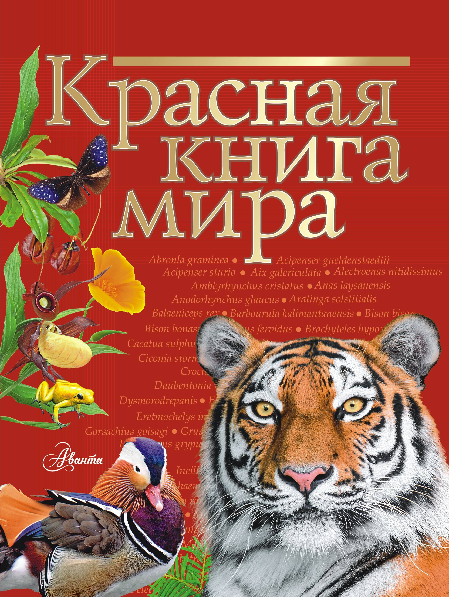

Причинами спровоцировавшими это стали и засорение окружающей среды, и охота, и скрещивание видов близких по родству. Эта статья посвящена обзору самых редких современных животных.
Основная их часть уже занесена в Красную книгу, но их популяции ещё имеют шанс на восстановление или снижение скорости приближения момента их исчезновения. Но имеются и такие виды,
снижение численности которых нет возможности, так в них полностью отсутствуют либо самки, либо самцы.
Такие виды животных помещают в красную книгу.
В топ-3 этой книги вошли:
1.Снежный барс
2.Белый лев
3.Флоридская пума
